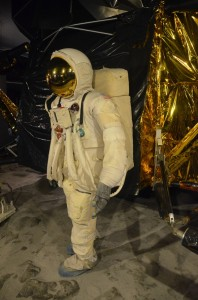

…aneb knížky, které mi zpříjemňovaly líné letní chvíle ve stínu pod fíky :).
Michaela Horňáková – Copywriting (Praktický průvodce tvorbou textů, které prodávají)
Opět jedna „vzdělávací“ publikace plná zajímavých poznatků z oblasti SEO, které mi přišly vhod, když jsem se SEO optimalizací v praxi zabývala v práci. Se zájmem jsem si přečetla také kapitolu o sociálních sítích – Facebooku a především Twitteru, který je pro mě zatím přece jen trošku neznámou. Autorka napsala publikaci ještě coby studentka VŠE, takže klobouk dolů. Příručka je přehledná, dobře se v ní čte i orientuje. Výhrady bych měla jen k tomu, že místy se v ní vyskytují stylistické chyby, kterým by se jistě dalo vyvarovat.
Robin S. Sharma – Mnich, který prodal své ferrari
„Mnicha“ jsem loni nadělila strýcovi k Vánocům, takže už proto jsem si chtěla knížku přečíst, abych věděla, jestli to byla dobrá volba. Kniha nese podtitul „Duchovní příběh o naplnění snů a směřování k životním cílům„. Já vím, že už to tu bylo několikrát, ale zjistila jsem, že si prostě asi potřebuju jednou za čas přečíst něco pozitivního a povzbudivého.
„…Vždycky si pamatuj, že příroda to zařídila tak, že když se jedny dveře zavřou, je to proto, aby se jiné otevřely.“
Mnich mi v jistém smyslu tak trochu pomohl dodat odvahu. V době, kdy jsem ho četla, jsem přesně taková slova potřebovala slyšet, ale nikdo je nedokázal vyslovit. Knížka se vám bude určitě líbit, pokud stojíte někde na rozcestí a potřebujete popostrčit dál nebo prostě jen chcete pohladit po duši a dobít energii. Načerpala jsem z ní hodně zajímavých myšlenek i motivace.
Myslím, že tuhle kultovní knížku asi většina z vás dobře zná. Já jsem se k ní poprvé dostala někdy na gymplu a opravdu mě sebrala. Nikdy předtím ani potom jsem takhle otevřenou zpověď narkomana nečetla. Knihu zpracovali na konci 70. let dva němečtí novináři na základě rozhovoru s tehdy patnáctiletou Christianou, která byla závislá na heroinu. Dokumentární charakter knize dodávají komentáře Christianiny matky a také fotografie Christianiných „přátel“ z drogového podsvětí a vyústění jejich osudů. Pokud se vám číst nechce, rozhodně se musíte podívat alespoň na film, o kterém jsem tady na blogu už kdysi psala. Najdete ho i s českými titulky na youtube a je to jedna z nejpovedenějších adaptací, jakou jsem kdy viděla.
Ještě než jsme odjeli do Anglie, pokusila jsem se o své první lasagne. Přestože jsem se docela bála, jak se povedou, nakonec byl výsledek překvapivě dobrý. Připravovala jsem je podle tohoto receptu, který je (tuším) z Albert magazínu:
250g lasagnových plátů
1 lžíce olivového oleje
1-2 stroužky česneku nebo 1 cibule
2x 400g plechovka rajčat
8 plátků šunky
hrst zelených oliv
150g bílého jogurtu
50g čedaru, strouhaného + na posypání
Plátky lasagní dáme na 5 minut vařit do vroucí osolené vody, pak je osušíme. Olej rozpálíme v pánvi, přidáme česnek a po minutě rajčata. Necháme 5 minut probublávat, osolíme a opepříme. Pak začneme vrstvit do vymazané zapékací mísy: pláty lasagní, šunku, omáčku, olivy. Vrstvy zopakujeme, končit bychom měli olivami. Navrch nalijeme osolený jogurt smíchaný se sýrem. Posypeme dalším sýrem a 15 minut zapékáme při 180°C.
Co si budeme nalhávat… jsou sny, které se nikdy nesplní. Všichni takové máme. Ale pak jsou taky sny, které by se splnit mohly. Já jsem dobrou desítku let snila o dnu, kdy se bosá proběhnu po přechodu na Abbey Road. Budu kráčet stejnými místy, kterých se kdysi dotýkala chodidla slavných Beatlů (přejděme fakt, že se ten původní přechod o pár metrů posunul :D). Ten sen se splnil. Ten den byl tady. A (nejen) o něm to dneska bude ;-).
Pro navození atmosféry beatlemánie si ke čtení dnešního příspěvku prosím pusťte toto :-):
Přestože Péťa není fanouškem Beatles, návštěvu posvátné půdy před nahrávacími studii v St. John’s Wood mi nemohl odepřít. Nalákala jsem ho, přiznávám, hlavně na webkamerku na stránce http://www.abbeyroad.com/Crossing :D.
S čím jsem trošku nepočítala byl fakt, že focení na přechodu bude taková davovka. Skutečně mě překvapilo množství turistů, kteří sem přišli přejít přes přechod. Jenže pak jsem uviděla zeď před nahrávacími studii – celou popsanou a pokreslenou vzkazy od fanoušků z celého světa – a došlo mi, že tenhle přechod nebyl prohlášen britskou kulturní památkou jen tak pro nic za nic.
Nejprve jsme začali SMSkovat do ČR, protože jsme byli domluvení s Žánkem a Péťovým bratránkem, že nás přes webkameru na webu vyfotí, až budeme přecházet. Na úvod jsme se ovšem zvěčnili na zdi – a to dokonce v zakázané zóně. (Že je za bránu nahrávacích studií vstup zakázán jsem zjistila až poté, co mé mistrovské dílo bylo dokonáno… což mu jistě dodává na hodnotě :D!)
Byli jsme tam!!
Samotné přecházení a tvorba fotky byl docela porod. Jednak ta strašná tlačenice fanoušků, do toho projíždějící auta…a ještě ke všemu ta jejich jízda vlevo! Člověk nevěděl, kam se koukat dřív. Myslím, že místní řidiči musí tenhle přechod fakt strašně nenávidět :D… Na mým místě byste se na vyzouvání bot asi taky vykašlali :D. Ale byli jsme tam! A kráčeli přes Abbey Road!
Když už jsme měli toho nebezpečného přecházení tam a zpátky dost, zamávali jsme do Čech do webkamerky a vydali se ještě hledat ceduli s názvem ulice. Chtěla jsem mít alespoň jednu fotografii z Abbey Road „sama pro sebe“, bez tlačenice a davu ostatních fanoušků.
A pak už jsme se s Abbey Road skutečně definitivně rozloučili a vydali se hledat Regent’s Park – údajně nejkrásnější z londýnských parků. Cestou jsme míjeli obrovskou mešitu, nacházející se hned na okraji parku. Asi bychom se sami neodvážili jít přímo dovnitř, ale jeden sympatický pán, který se tam šel právě pomodlit, se nás ujal, vzal nás s sebou a něco málo nám o mešitě povyprávěl. Samozřejmě jsme se museli vyzout a já si musela uvázat šátek přes hlavu. Byl to moc zajímavý zážitek – ještě nikdy jsem v mešitě nebyla – ale fotit jsme se neodvážili.
Mešita
Zvěsti nelhaly – Regent’s Park je skutečně překrásný. Obzvlášť jeho Queen’s Garden plná různobarevných růžových záhonů. Každá z růží má své jméno a některé květy jsou velké i jako dlaň. Je to určitě jedno z nejromantičtějších míst na světě a jestli půjdete někdy v Londýně na rande, jděte určitě do Regent’s Parku :-)! I my se rozhodli, že zde strávíme více času, ale nejprve si skočíme na nedalekou Baker Street pro něco k snědku a uděláme si pak v parku piknik.
Madam Tussaud’s
Baker Street bylo jedno z nejvíce zalidněných míst, která jsme v Londýně navštívili. Svůj podíl na tom má jistě Muzeum Madam Tussaud, jehož fronta se táhne daleko předaleko. My jsme se rozhodli Tusseaud’s vynechat a dobře jsme udělali. Na Baker Street jsou totiž mnohem příjemnější místa, kde se dají utrácet peníze :D…
Ano, třeba v Beatles Store! Dnešní den zkrátka patřil splněným snům… Jestli existuje ráj, představuju si ho jako Beatles Store. Z reproduktorů hraje Working Class Hero a všude, kam se podíváte, jsou Beatles – na tričkách, na plackách, pohlednicích, kabelkách, ponožkách, budících, propiskách, skleničkách… viděla jsem dokonce i dětské dupačky nebo tašku na kolečkách pro důchodce :D! Asi nemá cenu popisovat vám extázi, kterou jsem zažila. Kdo nemiluje Beatles, stejně nepochopí :). Mít neomezený rozpočet, skoupím to tam všecko. Něco malého jsem si ale odvézt musela, to dá rozum. A tak to nakonec vyhrála oboustranná Beatlesácká taška s natištěnými podpisy všech čtyř Brouků.
Hned vedle Beatles Store se nachází Muzeum Sherlocka Holmese (k němu mimochodem vede ta fronta na fotce výše). Tam už jsme nešli, ale aspoň jsme se s Sherlockem vyfotili na ulici :-).
S prvními londýnskými suvenýry a balením sladkých muffinů jsme se vrátili zpátky do Regent’s Parku – vychutnat si tu růžovou nádheru. Nyní prosím omluvte záplavu poněkud monotematických fotek. Myslím, že se vážně povedly, ale ani tak nedokážou vystihnout, jak krásně tam ve skutečnosti bylo.
… aneb přehled prázdných kosmetických krabiček za uplynulý měsíc :-).
Micelární odličovací voda, Blanchette B.
Podlehla jsem mocné propagandě kosmetické blogosféry a když jsem jednou při nákupu v Kauflandu náhodou zpozorovala, že tento slavný odličovač mají na skladě, hnedka jsem ho chňapla :D! Micelárka za dvacku – to je hodně silné lákadlo! A teď tedy k mým dojmům: odličovací voda není nijak výrazně parfémovaná. Odličuje velice dobře – vždycky si myslím, že už mám pleť mlékem dobře vyčištěnou a tahle vodička z ní přesto vždycky ještě nějaké nečistoty vytáhne. Na pleti je příjemná, nedráždí a vysušuje jen minimálně. Docela rychle však ubývá – a to zejména zásluhou balení, z něhož se micelárka dost špatně dávkuje a často vám produktu vyteče větší množství, než jaké právě potřebujete. Co se týče odličování očních partií, je to docela ok – jen nesmí micelárka přijít přímo do oka, pak to trošku pálí. Zatím mi tedy připadá na odlíčení očí nejlepší heřmánková pleťovka od Yves Rocher. Na druhou stranu si ale myslím, že tahle micelárka je za ty peníze víc než slušná. Asi to nebude zrovna láska, ke které bych se musela neustále vracet, nicméně bych do ní klidně šla zas (kdyby byla krize a na Yves Rocher nebylo :D!).
Tělový krém Granátové jablko & fíky, Isana
Tato půllitrová krabička se v mé koupelně neohřála tak dlouho, jak bych si byla bývala přála. Jsem holka šikovná, a tak se mi jednoho hezkého večera povedlo dobrou třetinu obsahu rozlít po koupelně (to je ta nevýhoda šroubovacích obalů, které jinak bezmezně miluju, ale přiznejme si – s plně uzavíratelným balením by se to nestalo). Být to nějaký dražší produkt, asi se začnu mlátit do hlavy – takto se to naštěstí obešlo bez silnějších emočních projevů :D. Na vině byla také poměrně řídká konzistence produktu (což mě překvapuje – krém je vyloženě určen pro suchou pokožku, ale s hydratací jsem tak úplně spokojená nebyla). Hlavním důvodem, proč bych si tento výrobek už určitě nekoupila, je však jeho vůně. U limitované edice bych čekala něco letního a osvěžujícího, navozujícího atmosféru tropů – tohle je ale strašně přeslazené a k létu mi to zkrátka nějak nepasuje. Krém obsahuje panthenol a bambucké máslo, docela dobře se roztírá, ale vstřebává se na můj vkus celkem pomalu. Co mu však na závěr připisuju k dobru, je absence minerálních olejů, silikonů a parabenů. To je také pravděpodobně jediný důvod, kvůli kterému bych vám výrobek mohla doporučit.
Se značkou Himalaya jsem dosud neměla žádnou zkušenost – až při jedné návštěvě kroměřížské Hypernovy mě uhodil do očí tenhle krém za pouhé pade. Himalaya Herbals je řada přírodních produktů, které používají byliny vybrané z Podhůří Himálají. Přestože se značka na první pohled tváří jako přírodní, po zběžném prohlédnutí složení zjistíte, že to zas až taková hitparáda asi nebude. Ale za ty prachy? Samozřejmě jsem to musela aspoň vyzkoušet. A přiznávám, že jsem prostě nadšená! Jednak se mi moc líbí design výrobku – praktická malá šroubovací krabička, ale především: krém je opravdu skvělý a univerzální. Moc hezky a příjemně voní – nevtíravě, jemně a přitom originálně. Hydratuje báječně a přitom pleť vůbec nezmastí – bleskurychle se vstřebá a zanechá jen krásně vyživenou tvář. Používala jsem ho běžně na den, na noc i pod make-up a ve všech případech jsem byla spokojená. Hydratační krém obsahuje Aloe Vera, Gotu Kola (netuším, co to je – a mám to vůbec chtít vědět :D??), výtažky ze zimní třešně, indického stromu Kino a indického ženšenu, které chrání pokožku před vysušováním a znečištěním, což se v létě jistě může hodit. Pocitově se mi tedy výrobek moc líbí. Co se týče složení, na které se teď snažím více koukat, mám jisté výhrady, ale celkový pozitivní pocit převládá, takže doporučuji a jistě se s tímto krémem neloučím na dlouho :-).
Tento roztomilý sprcháček jsem dostala někdy před rokem jako dárek k nákupu v Yves Rocher, takže jsem se rozhodla jej konečně otestovat. Na to, jak mi v YR vždycky všechno krásně voní, Růže mě nijak zvlášť neokouzlila. Je to asi tím, že já na tyto květinkové odéry moc nejsem. Jinak je sprcháč určitě fajn na letní cesty a hezkou růžovou flaštičku třeba ještě nějak zužitkuju.
Dětské vlhčené ubrousky pro citlivou pokožku, Babylove
Již tradičně jsem s sebou na dovolenou nezapomněla vzít víceúčelové vlhčené ubrousky. Tentokrát volba padla na značku Babylove z DMka. V balíčku je přesně 30 kusů. Ubrousky obsahují panthenol a jsou bez silikonů, bez alkoholu, barviv, parfemace i bez minerálních olejů. Potud je asi všechno v pořádku. Problém nastává, když si s nimi chcete odlíčit obličej. Ne že by to nešlo (i když být o trochu více navlhčené, určitě bych se nezlobila), ale ty ubrousky jsou tak strašně hrubé, že se nedá hovořit o příjemném zážitku. Vůně by také mohla být o něco lepší, ale na tom tolik nelpím. Ve všech ostatních ohledech – na očistu rukou, osvěžení obličeje, těla ba i na čištění bot se osvědčily ubrousky docela dobře, ale na obličej už prostě ne, nikdy!
Tak trochu z obavy před dalšími vrtochy londýnského počasí jsme se rozhodli strávit středeční den v teple jednoho z nejnavštěvovanějších londýnských muzejí – Victoria & Albert Museum. Bylo to koneckonců i coby kamenem od našeho hotelu, takže by bylo jistě ostudné tam nezavítat. Victoria & Albert Museum ukrývá největší světové sbírky uměleckých řemesel – nádobí, sklo, nábytek, keramiku, šperky a mnoho mnoho dalšího. Nejprve jsme si prošli zajímavou expozici o vývoji módy, která zahrnovala opravdu pestrou sbírku od historického oblečení přes barevné šedesátkové šatičky až po tvorbu současných módních návrhářů – Vivienne Westwood, Alexandra McQueena a řady dalších. Zaujala mě také archaická čísla módního časopisu Vogue či neméně archaické modely od Diora :-). Poté jsme už pokračovali k obrovské sbírce asijského umění. Najdete tu opravdu všechno možné – sošky, keramiku, látky, nádobí. Je toho tolik, že se opravdu nedá stihnout vše. Východní umění nás zaujalo nejvíce. Pak jsme ještě v rychlosti prolítli část věnovanou evropské středověké tvorbě a nenechali jsme si ujít ani sbírku Raffaelových maleb, které muzeu zapůjčila sama královna O:-). Nakonec jsme se přemístili ještě do šestého patra, kde se nachází expozice nábytku a keramiky. Opět vás, zejména u keramiky, zaskočí to množství. Řada obrovských prosklených vitrín, zaplněných až po strop vázami a dalším křehkým nádobím ze všech koutů světa.
Victoria & Albert Museum
Victoria & Albert Museum nás zabavilo skutečně na celé dopoledne. Po včerejším úspěchu jsme se rozhodli vyhledat si nějakou příjemnou restauraci v okolí opět přes Trip Adviser. Vydali jsme se tedy podle mapy nahoru k Hyde Parku. Restauraci se nám sice najít nepodařilo, zato jsme objevili překrásný Albert Memorial a hned naproti slavnou koncertní síň Royal Alber Hall, kde vystupovali mimo jiné The Beatles /jak jinak :)/, Jimi Hendrix, Frank Sinatra nebo třeba Adele.
Když jsme tedy u Hyde Parku nepochodili, vydali jsme se hledat nějakou restauraci na náhodu. Nakonec jsme zakotvili v pochybném japonském podniku Little Japan. Navzdory ne příliš příznivým recenzím z Trip Adviseru a chudému interiéru bylo jídlo překvapivě docela dobré, se spoustou zeleniny, takže se skoro nedalo sníst. Cestou zpět k muzeu jsme samozřejmě narazili na původně hledanou restauraci 😀 – v mapě totiž byla zaznačená na opačném konci ulice. Tu du dum tum…
Náladu nám brzy zvedla návštěva Science Museum. Kdybych vám měla doporučit jedno jediné londýnské muzeum, které si rozhodně nesmíte nechat ujít, bylo by to právě toto, nacházející se hned vedle Victoria & Albert. Strávili jsme v něm celé odpoledne až do zavíračky a pořád jsme neměli dost. Muzeum má 5 pater a najdete tu skutečně všechno od parních strojů přes létání do vesmíru až po přírodní vědy. Všechno podané úžasně zábavnou a interaktivní formou. Co jsme během naší návštěvy stihli my: expozici o létání do vesmíru (plnou zajímavých informací, které vás vždycky strašně zajímaly, ale neodvážili jste se zeptat, třeba… jak chodí kosmonauti na záchod :D!), historii parních strojů, vývoj informačních technologií a expozici o materiálech současnosti i budoucnosti.
Science MuseumA jak chodí kosmonauti na záchod?
Viděli jsme také Foucaltovo kyvadlo, první model rentgenu či originální kabinu Apolla 10! Líbil se nám i koutek se zajímavostmi o lidském těle, našem mozku, paměti atd. Já osobně jsem byla snad vůbec nejvíc nadšená z expozice „Making the modern world“, v níž se nacházely vitríny plné různých inovativních výrobků z té které dekády 20. století. Jednalo se samozřejmě o předměty běžné denní potřeby, a to nejen technického rázu, ale třeba také časopisy, kosmetické výrobky, domácí spotřebiče nebo hračky. Jak šel čas blíže do současnosti, začala jsem spoustu z nich důvěrně poznávat a uvědomila jsem si, kolik věcí z našeho dětství už je vlastně dneska „retro“ – třeba takové obyčejné kazety do kazeťáku :D! Dost času jsem tu strávila s nosem přilepeným na skle :D.
Ve dvou nejvyšších patrech se nachází také výstava o historii lékařství, kterou už jsme bohužel nestihli, ale myslím, že i tak jsme toho nakonec viděli opravdu hodně. Na závěr dne jsme si nechali procházku Hyde Parkem se zastávkou u Princess Diana Memorial Fountain. Je to moc příjemné a klidné místo, kde se dá odpočinout od londýnského shonu. I přesto se mi Hyde Park ze všech londýnských parků líbil nejmíň. Ne že by nebyl hezký – jen je zkrátka asi nejméně zajímavý. Je ale pravda, že jsme viděli pouze jeho východní část – ta západní, s Kensington gardens, je určitě hezčí.
Princess Diana Memorial Fountain
Hyde Park jsme opustili přímo u Speaker’s Corner. Překvapilo mě, že to je vlastně jen půlkruh s nápisem na chodníku. Žádné pódium, židle pro posluchače, prostě nic. Ve středu večer tam tak či tak nebyla ani noha :D.
Přímo za Speaker’s Corner se nachází Marble Arch – mramorový oblouk inspirovaný triumfálním Konstantinovým obloukem v Římě. Hned za ním už začíná proslulá nákupní třída Oxford Street. Přestože jsme tedy nákupy neměli na programu, neodolali jsme a aspoň se po ní prošli :-). Nejprve jsme se ale vybavili nějakým dobrým jídlem v Sainsbury’s.
Oxford Street není tak nóbl jako třeba Champs Elysée. Vlastně mi nepřišla vůbec nóbl. Najdete tam vesměs stejné obchodní řetězce, jako u nás. A pak samozřejmě obří Primark, asi nejslavnější obchod na světě :D. Takže dohromady nic vzrušujícího, a přesto tam byla větší tlačenice a koncentrace lidí, než u těch nejslavnějších londýnských památek. Ze zvědavosti jsme vlezli do Selfridges – tam nám to ale naopak přišlo luxusní až moc, tak jsme vylezli zase ven, abychom si před obří výlohou Louise Vuitona mohli sníst své slaďoučké donutky s jahodovou polevou. Bylo to skoro jako ve Snídani u Tiffanyho :D! A ty donutky ze Sainsbury’s byly nejlepší, jaké jsem kdy jedla :-)!
Z Oxford Street už jsme pak jeli rovnou do hotelu. Na večer jsme si koupili pivko Guiness, ale nijak zvlášť nám nechutnalo – nemělo prostě říz! Po návratu z Anglie jsme si opravdu začali vážit našeho dobrého (a levného :D!) českého piva. Než jsme se nadáli, byl před námi poslední den naší dovolené. A jak se říká, na konec patří to nejlepší. Ale o tom zase někdy jindy :-)…
Následující den byl, co se týče počasí, asi nejhorší za celý náš pobyt v Londýně. Krom toho, že byla pěkná kosa, to od rána navíc vypadalo na déšť. A to se nám vůbec, ale vůbec nelíbilo – vyráželi jsme totiž na výlet do Greenwiche. Když jsme vylezli na stanici metra u O2 Areny, zjistili jsme, že k observatoři je to ještě pěkná štreka pěšky. Ocitli jsme se v jakési průmyslové zóně, kde nejen že chcípnul pes, ale navíc tady nebyl ani žádný záchytný bod, podle kterého bychom se mohli zorientovat a najít cestu. Takto zoufalé nás potkal jeden milý pán venčící pejska, a zeptal se, kam bychom potřebovali. Řekli jsme, že hledáme observatoř v Greenwichi. Úplně přesně jsme nepochopili, co nám radí, ale porozuměli jsme, že se tam dostaneme autobusem a je to asi sedm zastávek odsud. A tak jsme se zaradovali a naskočili do našeho prvního double deckeru :-)! Měli jsme štěstí, že jsme se octnuli v okrajové části, kde se to turisty zrovna nehemžilo. Celé horní patro autobusu jsme tak měli pro sebe a mohli blbnout s foťákem :-).
První jízda v double-deckeru :)
Cesta patrovým autobusem byla pro mě určitě jednou z nejlepších atrakcí Londýna. Bylo to hrozně napínavé, protože jsme vlastně vůbec nevěděli, kam jedeme. Vystoupili jsme sice trochu předčasně, ale nakonec se nám Queen’s House a záhy i observatoř skutečně podařilo najít.
Byli bychom se hned vydali nahoru k nultému poledníku… to bychom ale nesměli po cestě potkat National Maritime Museum. Původně jsme se chtěli podívat jen dovnitř a hned zas jít, ale milá paní u poklady se nás ujala a vysvětlila, co všechno si tu můžeme prohlédnout a ke kterým expozicím je volný vstup. A tak jsme úplně změnili plány a celé dopoledne strávili v muzeu.
National Maritime Museum
National Maritime Museum bylo úžasné – vlastně jako všechna londýnská muzea, která jsme navštívili :-). Všechno je tak krásně udělané, že si návštěvu muzea užijí děti i dospělí. Samozřejmostí je spousta interaktivních koutků. Není divu, že muzea jsou plná dětí ve školních uniformách (jen nám bylo divné, že na začátku července ještě nemají prázdniny, chudinky :D!). Najdete tu všechno – od významných britských mořeplavců přes dobývání severního pólu až po obchodní cesty do Indie. Moc se nám tu líbilo a zdaleka jsme nestihli všechno, co muzeum nabízí. Vyhnal nás ale hlad – jako obvykle :D.
Přes Trip Adviser jsme našli tip na nedalekou restauraci Goddards at Greenwich. Tento stylový podnik s milou obsluhou si nás okamžitě získal. Rozhodli jsme se vyzkoušet konečně také něco tradičního z britské kuchyně. V nabídce najdete různé druhy plněných koláčů, ke kterým se podává bramborová kaše a omáčka dle výběru. Pie mi přišel docela hutný, ale byl dobrý a zasytil a omáčka i kaše mi také chutnaly. Rozmazlili jsme se ještě kávičkou a horkou čokoládou a odcházeli jsme naprosto spokojení. Pokud se někdy zatouláte do Greenwiche, tato restaurace je určitě dobrá volba :-).
Na konci ulice, kde se nachází Goddards, najdete obrovskou plachetnici Cutty Sark, která v sobě ukrývá další muzeum. My už jsme ale byli celí nedočkaví a tak jsme ještě honem odlovili kešku (Péťa říká, že každý správný geolovec musí mít kešku z nultého poledníku :D) a vydali se konečně k té slavné observatoři.
Cesta k observatoři, pod námi Queen’s House
V National Maritime Museum jsme dostali přehledný plánek s vyznačenými částmi Royal Observatory, kam je volný vstup. Je to tak padesát na padesát – slavná čára s nultým poledníkem je samozřejmě za branou a bez vstupenky se tam nedostanete. Na druhou stranu je ale poledník naznačený i mimo tuto oplocenou část a kdo tu fotku s jednou nohou na pravé a s druhou na levé polokouli fakt moc chce, má ji mít :-)…
My jsme za vstupenku utrácet nechtěli a spokojili jsme se s částmi expozice, které jsou volně přístupné. V této části najdete například výstavu o měření času a vývoji hodin. Promítají se zde také zajímavá videa o sluneční soustavě. Zatoulali jsme se také do krásného parku přímo pod observatoří, kde jsme potkali pána krmícího ochočené veverky. Byly opravdu krotké, takže jsme si je mohli prohlédnout úplně zblízka.
Veverka z Greenwiche
V Greenwichi jsme také zažili náš první a poslední anglický déšť. Trval sotva deset minut :-). Poté už jsme se u observatoře nezdržovali a vyrazili dolů na autobus, který nás měl dopravit zpátky do City. Cesta trvala asi hodinu, seděli jsme v patře úplně vepředu a byla to prostě skvělá vyhlídková jízda. A navíc za zlomek ceny, za kterou podobnou cestu nabízí turistické autobusy :D! Vystoupili jsme nedaleko chrámu Temple. Záhy jsme zjistili, že je to zdejší „soudní“ čtvrť – kravaťáky se to tu jen hemžilo :-). Sídlí tu také dvě ze čtyř londýnských právnických škol. Zdejší architektura se mi moc líbila a za lepšího počasí to musí být báječné místo k náhodnému bloumání ulicemi Londýna :-).
Cestou jsme si neodpustili také foto s červenými telefonními budkami – a tak bylo ten den londýnským klišé učiněno zadost :-).
S červenou budkou
Na návštěvu St. Paul jsme neměli štěstí. Dorazili jsme přecejen dost pozdě a katedrála už byla bohužel zavřená. Tak až tam někdo pojedete, nezapomeňte jít dovnitř a pak mi povyprávět, jaké to tam je :-)! Chrám je obrovský – spoustu času zabere jen obejít ho celý kolem dokola. Kopule je prý druhá největší po dómu Svatého Petra v Římě.
Naší poslední zastávkou se stal opět Westminster s cílem vyfotit si noční Big Ben a London Eye. Následovala tedy poslední okružní jízda double deckerem a poté mrznutí na břehu Temže, než se konečně pořádně setmělo a Big Ben rozzářil svá světla. Pokud jedete do Londýna s podobnou touhou po nočních fotkách, vřele doporučuju zabalit si s sebou nějaké termo-prádlo :D…
Následujícího rána vedly naše první kroky do banky na Earl’s Court Road. Záhy po příjezdu do Londýna jsme totiž zjistili, že jsme doma nafasovali staré britské bankovky a modlili jsme se, aby nám je v bance vyměnili. Naštěstí to nebyl vůbec žádný problém a během pár minut jsme odcházeli s aktuální měnou :-). Poté už jsme se vydali rovnou na metro na Tower Hill. Při této cestě jsme pochopili, co je pravdy na tom, že obyvatelé Londýna na své metro věčně nadávají. Na Tower Hill jsme jeli snad hodinu (přitom je to pořád centrum města) – metro za každou druhou zastávkou stálo někde v tunelu. Šumějícím zprávám z rozhlasu jsme moc nerozuměli, takže nezbývalo než doufat, že k Toweru nakonec šťastně dorazíme. Pohled, který se před námi otevřel hned poté, co jsme vylezli zpátky na světlo, ale za všechna ta příkoří rozhodně stál.
Tower
A co teprve Tower Bridge – další londýnská dominanta stojící hned opodál. Překvapilo mě, jak je modrý – to mi z fotek nikdy nepřišlo :-). Je nádhera vidět ho na vlastní oči.
Tower Bridge
Trochu mě mrzí, že jsem u Toweru viděla jenom jednoho krkavce (a kdoví, zda to vůbec byl ten pravý) :D! V okolí pevnosti se hodně staví a mně osobně se příliš nelíbí budovy, které v její blízkosti vyrostly. Byť je Swiss Re Tower jistě impozantní, vedle historického Toweru působí trochu jako pěst na oko a strhává na sebe veškerou pozornost.
Poté, co jsme přešli Tower Bridge, dostali jsme se na proslulé „korzo“ Queen’s Walk. Při cestě okolo Temže jsme minuli válečný křižník Belfast, který dnes slouží jako muzeum.
Mezitím už jsme dostali docela hlad a začali jsme přemýšlet, kam se půjdeme najíst tentokrát. Jako předkrm jsme si dali jeden cheese u Mekáče (trestuhodné, ale nechtěli jsme hledat s úplně prázdným žaludkem) a nakonec se nám podařilo objevit Borough Market – úžasné místo přímo u Southwark Cathedral. Najdete tu spoustu stánků s lákavými dobrotami – od sýrů, sladkostí a uzenin až po sendviče a nápoje. Neodolali jsme a každý jsme si dali jeden kebab – Péťa s jehněčím a já vegetariánský s tofu. Oba byly obrovitánské a báječné a ještě jsme k nim každý dostali lízátko :-).
Borough market
S plným žaludkem jsme se vydali na prohlídku Southwark Cathedral. Hned na úvod nás příjemně překvapila sympatická babi, která nám u vchodu nabídla povídání o katedrále v našem rodném jazyce :-). Chrám je moc hezký, ale bohužel je zakázáno fotit v interiéru. Jeho zajímavostí je třeba Harvardská kaple, pojmenovaná na počest zakladatele americké univerzity – Johna Harvarda, který byl v kostele Southwark v roce 1607 pokřtěn :). V katedrále se nachází také památník Williama Shakespeara… a naše další kroky nevedly nikam jinam než směrem ke Globe Theatre.
V Globe se mi strašně moc líbil obchod se suvenýry – až je mi teď skoro líto, že jsem si tam nic nekoupila :-). Trička i další předměty s hláškama ze Shakespearových her a hlavně knížky, spooousta krásných knížek pro děti i pro dospělé. Shakespeare na milion způsobů, komiksy ale také krásné ilustrované knihy o Londýně. Určitě bych tam vydržela mnohem dýl, ale chtěli jsme se ještě podívat do sousední Tate Modern. Ta zavírá, jako většina zdejších muzejí, v 18:00, takže nám na prohlídku zbývala už jen hodina času. I tak jsme si to tam ale užili a zbytek si necháváme na příště :-).
Prošli jsme se po slavném Millennium Bridge na protější břeh, kde stojí St. Paul’s Cathedral. Její návštěvu jsme se rozhodli nechat na následující den, protože už jsme byli docela unavení, a tak jsme se vydali na metro zpátky do hotelu.
Millennium Bridge se St.Paul’s Cathedral
Večer jsme vyrazili na nákup do nedalekého Tesca – pro redukci. Nějak nás totiž při plánování cesty nenapadlo, že v Anglii mají trochu jiné zásuvky a mobily se nám vybily už druhý den. Naštěstí se nám podařilo redukci bez problémů sehnat a k tomu také vínečko, pomazánku z cizrny a balení muffinů na snídani. Jídlo jsme si tu vážně užívali :-)! S touto výbavou jsme byli dokonale připraveni na báječný večer i následující den, který jsme se rozhodli strávit v Greenwichi.
Na náš první den v Londýně jsme si naplánovali okruh po pravděpodobně nejslavnějších místních památkách. Nejprve jsme metrem zamířili na Picadilly Circus s populární soškou Erose. Okolí fontánky mi sice přišlo poněkud špinavé a zaplivané, ale jinak mě atmosféra místa nadchnula – obrázek, který se nám naskytnul, byl prostě jako vystřižený z učebnice angličtiny pro střední školy :D! Navíc všude kolem projížděl jeden doubledecker za druhým.
Picadilly Circus
Z náměstí Picadilly jsme se pomalu vydali po Regent Street směrem k National Gallery, do níž jsme jen krátce nahlédli, ale nechtěli jsme se příliš zdržovat v interiéru, když bylo venku tak hezky.
V National Gallery
Pokračovali jsme tedy až na Trafalgar Square, kde tou dobou uklízeli pozůstatky nějakého festivalu. Z toho důvodu nemáme zrovna dvakrát výstavní fotky tohoto jinak jistě překrásného náměstí. Ujistili jsme se, že zde skutečně stojí admirál Nelson, a vydali se po reprezentativní třídě The Mall, směřující přímo k Buckinghamskému paláci.
Trafalgar Square
The Mall lemuje St. James’s Park. Pohled do svěží zeleně mě zlákal a navíc to vypadalo, že výměnu stráží už stejně nestihneme (podle průvodce měla začínat v 11 a blížilo se už poledne), rozhodli jsme se tedy na chvíli zakempit na lehátkách v parku.
Když jsme se o něco později zvedli a vrátili se z parku zpět na The Mall, všimli jsme si, že všichni turisté se najednou ze silnice stáhnuli k jejímu okraji a úplně vepředu u Buckinghamského paláce řídí situaci londýnská policie. Zvědavě jsme si tedy stoupli na okraj chodníku a čekali, co se bude dít. Doufala jsem, že okolo třeba projede nějaký člen Royal family :D. Tolik štěstí jsme sice neměli, ale podařilo se nám nakonec stihnout onu výměnu stráží, o které jsme si mysleli, že už je dávno po ní.
U Buckinghamského paláce bylo samozřejmě spoustu turistů. Místo je to určitě zajímavé a stojí za návštěvu, ale popravdě tam krom těch vojáčků není nic moc k vidění. Ještě pár fotek v rozkvetlém záhonku a už byl nejvyšší čas, shánět se po nějakém obědě :)…
Protože jsme se nacházeli nedaleko stanice metra Victoria, kde jsme předchozího dne zahájili naše londýnské dobrodružství, řekli jsme si, že to bude i vhodné místo k sehnání něčeho k snědku. Původně jsme měli v plánu koupit si jen nějaký sendvič, ale když jsme objevili fish and chips za necelých 6 liber v místní „nádražce“ Victoria Café, neodolali jsme :-).
Naše první „fish and chips“
Fish and chips bylo výborné a porce obrovská. Nakonec jsme si dali ještě capuccino, zastavili se v M&S pro něco k pití a vydali se pomalu zpátky k St. James’s Parku, kde jsme se chtěli na chvíli svalit do trávy a dát odpočinout uchozeným nožkám. St. James’s Park, stejně jako další dva nejznámější londýnské parky, které jsme navštívili, je opravdu nádherným a příjemným místem k odpočinku. Tráva je krásně zelená a hebká a můžete si na ni kdekoliv sednout, udělat si piknik nebo se na ní jen tak válet. Všude je čisto, takže jsme nepotřebovali ani deku. Vyvalili jsme se zkrátka na trávu a užívali si krásné počasí, se kterým jsem v Londýně téměř nepočítala.
St James’s Park
Po příjemném odpočinku nás čekala cesta ke zlatému hřebu dnešního dne, který na nás po očku vykukoval už po cestě z Trafalgar Square. Prošli jsme po Whitehall kolem Downing Street (přímo ke slavnému č. 10 se bohužel nedostanete – z bezpečnostních důvodů je ulice uzavřena železnou bránou, kterou střeží policie), minuli zastávku metra Westminster a to už se před námi objevil Big Ben v celé své kráse. Stejně jako v případě Eiffelovky, i tady jsem byla překvapená jeho velikostí. Měla jsem za to, že věž je mnohem menší.
Přešli jsme Westminster Bridge a dostali se na protější břeh Temže, kde se nachází další londýnská ikona – London Eye. Její návštěvu jsme si ovšem nechali ujít.
London Eye
V úplném závěru dne jsme se prošli okolo Houses of Parliament a nakonec završili tento památkový okruh návštěvou Westminster Abbey – nejslavnější církevní budovy v Londýně a místa královských korunovací, svateb a pohřbů. Do kaplí jsme se už nedostali, nicméně některé prostory opatství byly i takto pozdě ještě zpřístupněny, a tak jsme si mohli prohlédnout alespoň něco málo z interiéru.
Westminster Abbey
Myslím, že za první den jsme toho stihli docela dost :-). Přitom jsme se nemuseli nikam hnát a našli jsme si čas i na lehárko v parku. Ke štěstí už nám chyběla pouze dobrá večeře. O tu se nám tentokrát postarali v Sainsbury’s. Nakoupili jsme si tam vynikající pomazánky s vajíčkama a kari-kuřetem a také ochucený cider, na který jsme byli velice zvědaví. Popravdě – bylo to dost přeslazené pití (mnohem víc, než třeba Radler) a nějak jsme nezpozorovali, že bychom se z něj opili. Pocity klaustrofobie jsme naštěstí tentokrát nemuseli přebíjet alkoholem – únava z nabitého dne nás nakonec docela snadno a rychle uspala :-).
Většina mých milých čtenářů už jistě ví, že letos se cílem naší dovolené stala britská metropole – Londýn. Pokud si ještě vzpomínáte na mé články o cestě za oceán, Londýn a já – to byla láska na první pohled. Na to první setkání před přistáním na Heathrow nikdy nezapomenu. Už tehdy jsem doufala, že se spolu nevidíme naposledy. Čekala jsem tři roky, než se tenhle sen stal skutečností. Anglie však nakonec splnila všechna má očekávání, a tak se v nejbližších dnech můžete těšit na spoustu fotek, historek a dojmů. Těšíte se :)???
V cíli cesty jsme tedy měli od začátku jasno. Věděli jsme také, že určitě poletíme s nějakou nízkonákladovkou. Někdy koncem května jsme si zabůkovali letenky u společnosti Ryanair. Pokud se rozhodnete s nimi také někdy v budoucnu letět, vězte, že jejich webovky jsou naprosto příšerné. Rezervaci musíte vyplňovat strašně rychle, jinak vám to celé spadne a můžete začít od začátku (což se nám také několikrát stalo 8-)). Podařilo se nám tedy sehnat přímý zpáteční let Brno, Tuřany -> Londýn, Stansted na ideální termín. Letenky se dají u Ryanairu koupit za opravdu slušný peníz, pokud si ale nevystačíte jen s příručním zavazadlem, musíte si za kufr o maximální váze 15kg zhruba tisícovku ještě připlatit. Je to dost, ale kufr na suvenýry se vám určitě bude hodit ;-)!
Poté, co jsme vyřešili letenky, vrhli jsme se na hledání ubytování. Londýn je jedno z nejdražších měst na světě, takže jsme nakonec usoudili, že jet „jen“ na 6 nocí je dobrá volba. I tak jsme museli dlouho brouzdat internetem, než se nám podařilo sehnat střechu nad hlavou za přijatelné peníze. Nevědomky jsme si vybrali termín, ve kterém se měl konat Wimbledon, takže do Londýna se valila spousta fanoušků. To nám ale došlo až mnohem později :D. Vybrali jsme si nakonec síť hotelů Easy Hotel, která má pobočky po celém Londýně. Zvolili jsme hotel na Earl’s Court nedaleko Hyde Parku a co se týče polohy, byl to skvělý tah. Earl’s Court je dopravní uzel, ze kterého se dá často i bez přestupu dopravit k celé řadě nejslavnějších památek.
Po těchto přípravách už nezbývalo nic jiného, než vypůjčit v knihovně nějaké ty průvodce s mapou, vytipovat nejzajímavější místa, objednat cestovní pojištění a zabalit kufr. Já osobně jsem počítala spíš s horší variantou počasí (jaké bylo mé překvapení, když jsem se hned první den dovolené opálila :D!) a každodenním deštěm (doopravdy nepršelo ani jednou, nepočítám-li lehkou spršku v Greenwichi). Při plánování cesty nám velmi pomohly webové stránky Minty trips. Pokud se chystáte do Anglie, určitě na ně mrkněte – najdete tam spoustu cenných informací o Londýně, doporučení na zajímavé památky, možnosti dopravy z letiště i po městě, gastronomické tipy a mnoho dalšího.
Takto vybavení jsme se tedy v sobotu (na Péťův svátek :-)) vypravili na brněnské letiště. Péťu čekal jeho první let v životě, takže byl trošku nesvůj. Tuřany jsou naštěstí opravdu maličké a nevyvolávají pocit zmatku tak, jako ostatní letiště. Navíc jsme na informacích potkali naši sousedku Danu, která je letuška :D. Let samotný proběhl úplně v pohodě. Mohli jsme si dokonce i vybrat, kde chceme sedět (systémem „kdo dřív přijde…“), takže jsme si hned zabrali okénko a díky tomu si prohlédli z výšky celé Brno.
Po zbytek cesty bylo spíše oblačno – mraky se protrhaly teprve nad Nizozemím, ale jasno pak už vydrželo až do cílové destinace. Hned po příletu jsem si pomyslela, že ty řeči o londýnském počasí snad musí být jen hloupý kec. Londýn mě totiž i tentokrát přivítal slunečními paprsky :-).
Trochu jsem se obávala, jak se zorientujeme na Stanstedu. Naštěstí to není zas tak veliké letiště, takže jsme všechno v pohodě našli, prošli pasovou kontrolou, vyzvedli si kufr a šli hledat autobus, který nás dopraví do centra. Lístky na National Express jsme si koupili už v letadle – díky milé slečně, která seděla vedle nás a cestovala s rodiči na Wimbledon, a která zjistila, že jízdenky koupené přes Ryanair jsou o několik liber levnější. Vzali jsme si tedy rovnou zpáteční jízdenku, která nás pro 2 osoby vyšla na 34 liber.
Autobus jsme našli bez problémů, přijel během čtvrt hodinky a už jsme si to frčeli směr Londýn – po levé straně samozřejmě :). Tato první okružní jízda po Londýně se mi hrozně líbila. Projeli jsme se po St. John’s Wood, Baker Street, Oxford Street i okolo Hyde Parku. Nakonec nás autobus vyplivnul na Victoria Station, což bylo úplně ideální – zastávka ležela na přímé lince metra, která vedla až k našemu hotelu. Nejprve nás ale samozřejmě čekal náročný úkol – vyřídit si Oyster Card – kreditovou jízdenku na městskou hromadnou dopravu. Chlápek u okénka nám nejdřív chtěl prodat týdenní. Rozhodně se tím ale nenechte zlákat! Týdenní jízdenka se vám vyplatí, jen pokud budete skutečně hodně jezdit. Podle mě je ale mnohem lepší prozkoumávat Londýn pěšky. Na Oyster Card si dobijete tolik peněz, kolik skutečně projedete. Doporučila bych tedy zpočátku míň – dobít můžete vždycky. Při odjezdu vám každopádně zálohu za Oyster Card (5 liber) i nevyužité peníze vrátí.
Vybaveni Oyster kartou jsme se rozhodli poohlédnout ještě po nějaké večeři. Přímo na stanici Victoria jsme našli obchůdek Marks and Spencer. Ano, značka jídla, které u nás v Čechách představuje „luxus“, který si dopřeju, když si chci přilepšit, je tady vnímán jako běžný řetězec typu Tesco (které tu mimochodem také naleznete v hojném počtu). Ceny samozřejmě pořád nejsou tak příznivé jako v Čechách, nicméně i tak představuje stravování v M&S jednu z nejlevnějších možných variant. Nakoupili jsme si tedy něco k pití, tousťák, lákavě vyhlížející paštiku, sýr a vínečko na oslavu našeho příjezdu. A pak už hurá na metro a hledat náš hotel.
Mezitím už se setmělo, nicméně Earl’s Court nevypadal na první pohled nijak nebezpečně. Hlavní třída je plná různých fast foodů a restaurací, obchůdků se suvenýry, ale také sámošek typu Sainsbury’s, které se nám během našeho pobytu několikrát postaraly o báječnou večeři/snídani. Hotel jsme našli bez obtíží, ubytovali se v našem mrňavoučkém pokojíčku bez oken a abychom zahnali pocity klaustrofobie, před kterými nás varovali cestovatelé na Trip Adviseru, exnuli jsme víno a vytuhli v očekávání příštího dne :)…


")


{kind=link}
{kind=link}
{kind=link}
{kind=link}
{kind=link}
{kind=link}
{kind=link}
{kind=link}
{kind=link}
{kind=link}
{kind=link}
{kind=link}
{kind=link}
{kind=link}
{kind=link}
{kind=link}
{kind=link}
{kind=link}
{kind=link}
{kind=link}
{kind=link}
{kind=link}
{kind=link}
{kind=link}
{kind=link}
{kind=link}
{kind=link}
{kind=link}
{kind=link}
{kind=link}
{kind=link}
{kind=link}
{kind=link}
{kind=link}
{kind=link}
{kind=link}
{kind=link}
{kind=link}